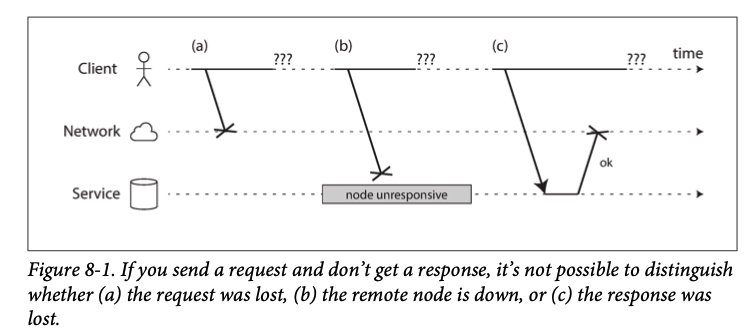
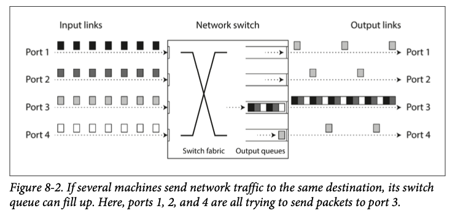
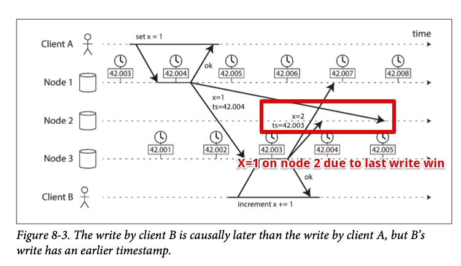
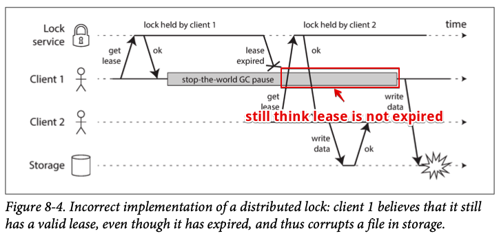
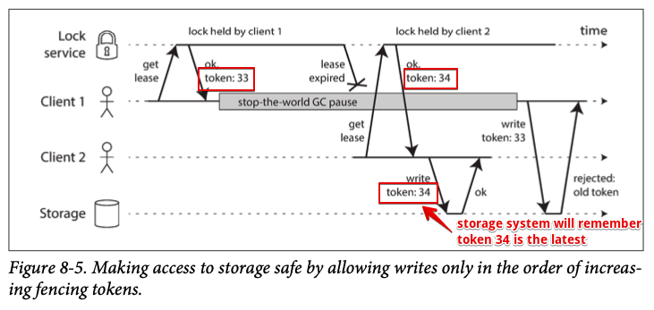

Chapter 8
This chapter deals with different kinds of issues in distributed system
Single node is deterministic where same operation always produces the same result
In distributed systems, there may be some part of the system that are broken which is known as partial failure. Partial failure are nondeterministic
Because distributed system are connected by network, you may not even know whether something succeeded or not, as the time it takes for a message to travel across a network is also nondeterministic
Large scale computing system has two kinds - High performance computing - Cloud computing which associated with multi-tenant datacenters This book focus on systems for implementing internet services which has following entities: - Application are online which means stopping the cluster is not acceptable - Nodes in cloud services are built from commodity hardware which means higher failure rates. - It is reasonable to assume that something is always broken.
Unreliable Networks¶
Distributed system is build on top of network (shared nothing architecture) And network is inherently unstable.
The internet and most internal networks in datacenters are asynchronous packet networks which means when one node sends a message, network gives no guarantees to when it arrive or it arrive at all.
If you send a request and expect a response, many things could go wrong: 1. Your request may have been lost 2. Your request may be waiting in a queue 3. Remote node may have failed 4. Remote node may temporarily stopped responding (long garbage collection) 5. Remote node may processed the request but response get lost 6. Response may get delayed (network on receiver's machine is overloaded)

Network Faults in Practice¶
during a software upgrade for a switch could trigger a network topology reconfiguration, during which network packets could be delayed for more than a minute [17]. Sharks might bite undersea cables and damage them [18]. Other surprising faults include a network interface that sometimes drops all inbound packets but sends outbound packets successfully [19]: just because a network link works in one direction doesn’t guarantee it’s also working in the opposite direction.
[17] Mark Imbriaco: “Downtime Last Saturday,” github.com, December 26, 2012. [18] Will Oremus: “The Global Internet Is Being Attacked by Sharks, Google Confirms,” slate.com, August 15, 2014.
If the error handling of network faults is not defined and tested, arbitrarily bad things could happen: for example, the cluster could become deadlocked and permanently unable to serve requests, even when the network recovers [20], or it could even delete all of your data [21]. If software is put in an unanticipated situation, it may do arbi‐ trary unexpected things.
Detecting Faults¶
- Load balancer needs to stop sending requests to a dead node
- In distributed database with single leader replication, if leader fails, one of follower needs to be promoted to the new leader
In some circumstances, we might get feedback to tell us something is not working
- OS will refuse TCP connections by sending a RST or FIN packet in reply
- If a node process crashed (or killed by admin), node's OS can run a script to notify other nodes about the crash so another node can take over quickly without having to wait for timeout to expire
- If we have access to interface of the network switches in our datacenter, we can query them to detect link failures at hardware level (this option is ruled out if we are connecting via the internet)
- If router is sure the IP address is unreachable, it may reply with ICMP Destination Unreachable packet
Conversely, if something has gone wrong, you may get an error response at some level of the stack, but in general you have to assume that you will get no response at all. You can retry a few times (TCP retries transparently, but you may also retry at the application level), wait for a timeout to elapse, and eventually declare the node dead if you don’t hear back within the timeout.
Timeouts and Unbounded Delays¶
If timeout is only sure way of detecting a fault, then how long should the timeout be?
Long timeout means long wait, short timeout may risk of incorrectly declaring a node is dead
Prematurely declaring a node dead is problematic: if the node is actually alive and in the middle of performing some action (for example, sending an email), and another node takes over, the action may end up being performed twice.
Imagine a fictitious system with a network that guaranteed a maximum delay for packets—every packet is either delivered within some time d, or it is lost, but delivery never takes longer than d. Furthermore, assume that you can guarantee that a nonfailed node always handles a request within some time r. In this case, you could guarantee that every successful request receives a response within time 2d + r—and if you don’t receive a response within that time, you know that either the network or the remote node is not working. If this was true, 2d + r would be a reasonable timeout to use.
Unfortunately, most systems we work with have neither of those guarantees: asynchronous networks have unbounded delays
Network congestion and queueing¶
Same as traffic congestion, packet delays varies with network due to queueing: - If several different nodes send packets simultaneously to same destination, the network switch must queue them up. If there is so much incoming data that switch queue fills up, the packet is dropped

- When a packet reaches the destination machine, if all CPU cores are currently busy, the incoming request from the network is queued by the operating system until the application is ready to handle it.
- In virtualized environments, a running operating system is often paused for tens of milliseconds while another virtual machine uses a CPU core. During this time, the VM cannot consume any data from the network, so the incoming data is queued (buffered) by the virtual machine monitor [26], further increasing the variability of network delays.
- TCP performs flow control (also known as congestion avoidance or backpressure), in which a node limits its own rate of sending in order to avoid overloading a network link or the receiving node [27].
TCP vs UDP¶
Some latency-sensitive applications, such as videoconferencing and Voice over IP (VoIP), use UDP rather than TCP. It’s a trade-off between reliability and variability of delays: as UDP does not perform flow control and does not retransmit lost packets, it avoids some of the reasons for variable network delays (although it is still susceptible to switch queues and scheduling delays). UDP is a good choice in situations where delayed data is worthless. For example, in a VoIP phone call, there probably isn’t enough time to retransmit a lost packet before its data is due to be played over the loudspeakers. In this case, there’s no point in retransmitting the packet—the application must instead fill the missing packet’s time slot with silence (causing a brief interruption in the sound) and move on in the stream. The retry happens at the human layer instead. (“Could you repeat that please? The sound just cut out for a moment.”)
Choice timeout experimentally¶
In public clouds and multi-tenant datacenters, resources are shared among many customers: the network links and switches, and even each machine’s network interface and CPUs (when running on virtual machines), are shared. Batch workloads such as MapReduce (see Chapter 10) can easily saturate network links. As you have no control over or insight into other customers’ usage of the shared resources, network delays can be highly variable if someone near you (a noisy neighbor) is using a lot of resources [28, 29].
In such environment, we need to choose timeouts experimentally: measure the distribution of network round-trip times over an extended period and over many machines. Then determine the expected variability of delays
Synchronous vs Asynchronous Networks¶
Why can’t we solve this at the hardware level and make the network reliable so that the software doesn’t need to worry about it?
To answer this question, it’s interesting to compare datacenter networks to the traditional fixed-line telephone network (non-cellular, non-VoIP), which is extremely reliable: delayed audio frames and dropped calls are very rare. A phone call requires a constantly low end-to-end latency and enough bandwidth to transfer the audio sam‐ ples of your voice. Wouldn’t it be nice to have similar reliability and predictability in computer networks?
When you make a call over telephone network, it establishes a circuit: fixed, guaranteed amount of bandwidth is allocated for the call, along with the entire route between the two callers. This circuit remains in place until the call ends.
This kind of network is synchronous
Can we not simply make network delays predictable?¶
Circuit in a telephone network is very different from TCP connection. It reserved fixed amount of bandwidth when circuit is established. Whereas TCP connection will try to transfer data in the shortest time possible and doesn't use any bandwidth when idle
Ethernet and IP are packet-switched protocols. These protocols do not have the concept of circuit
Why internet use packet switching? The answer is that they are optimized for bursty traffic.
A circuit is good for an audio or video call, which needs to transfer a fairly constant number of bits per second for the duration of the call. On the other hand, requesting a web page, sending an email, or transferring a file doesn’t have any particular bandwidth requirement—we just want it to complete as quickly as possible.
If we transfer a file over a circuit, we would have to guess the bandwidth allocation. If we guessed too low, the transfer time will be very long (network capacity is not fully utilized). If we guess too high, the circuit cannot be set up.
using circuits for bursty data transfer wastes network capacity or unnecessarily slow. By contrast, TCP dynamically adapts the rate of data transfer to the available network capacity
There have been some attempts to build hybrid networks that support both circuit switching and packet switching, such as ATM.iii InfiniBand has some similarities [35]: it implements end-to-end flow control at the link layer, which reduces the need for queueing in the network, although it can still suffer from delays due to link congestion [36]. With careful use of quality of service (QoS, prioritization and scheduling of packets) and admission control (rate-limiting senders), it is possible to emulate circuit switching on packet networks, or provide statistically bounded delay [25, 32].
This sounds promising, but it is not deployed to public internet yet.
However, such quality of service is currently not enabled in multi-tenant datacenters and public clouds, or when communicating via the internet.iv Currently deployed technology does not allow us to make any guarantees about delays or reliability of the network: we have to assume that network congestion, queueing, and unbounded delays will happen. Consequently, there’s no “correct” value for timeouts—they need to be determined experimentally.
Unreliable Clocks¶
Clocks and time are important. Application depends on clocks in various ways 1. Timeout 2. 99th percentile response time 3. Query per sec of this service can handle in last 5 mins 4. How long did user spend on our site? 5. When was the article published? 6. At what date and time should the reminder email be sent? 7. When does the cache expire? 8. What is the timestamp on this error message in this log file? 1-4 measures duration whereas 5-8 measures points in time
In distributed system, time become tricky because message can be delayed and we don't know how much later will the message arrive.
This fact makes it difficult to determine the order in which things happened when multiple machines are involved.
Each machine on the network has its own clock, which is a quartz crystal oscillator. This device is not perfect so each machine has its own notion of time.
Just like human being, each person experience time differently than others. My 1 hour might be different than yours
It is possible to synchronize clocks to some degree, the most commonly used mechanism is the Network Time Protocol (NTP), which allow computer to adjust its time by send request to a group of servers where it gets its time from a more accurate time source (GPS receiver)
Monotonic vs Time-of-Day Clocks¶
Time-of-day clocks¶
A time of day clock returns the current date and time according to some calendar (aka wall-clock time)
clock_gettime(CLOCK_REALTIME) on Linux and System.currentTimeMillis() in java return the number of seconds (or milliseconds) since the epoch midnight UTC on Jan 1 1970
Time-of-day clocks ideally should be same on another machine, however, if the local clock is far ahead of NTP server, it may force to reset and appear to jump back in time
These jumps and ignore of leap seconds (due to slow down of earth rotation) make time-of-day clock unsuitable for measuring elapsed time
Monotonic clocks¶
Compare to time-of-day clock, monotonic clock won't jump back in time.
The names come from the fact that they are guaranteed to always move forward
A monotonic clock is suitable for measuring duration (such as timeout or service's response time) clock_gettime(CLOCK_MONOTONIC) on linux and System.nanoTime() in Java are monotonic clocks.
You can check the value of monotonic clock at 1 point in time and check again at later time. The difference between 2 values tells you how much time elapsed between 2 checks.
Server with multiple CPU may have separate timer per CPU and not necessarily sync with other CPU. OS try to present a monotonic view of the clock but it is wise to take this guarantee of monotonicity with a pinch of salt
In distributed system, using a monotonic clock for measuring elapsed time is usually fine.
Clock Synchronization. and Accuracy¶
time-of-day clocks need to be set according to an NTP server or other external time source in order to be useful.
But hardware clocks and NTP can be unreliable: - The quartz clock in a computer can drift depending on the temperature of the machine.
Google assumes a clock drift of 200 ppm (parts per million) for its servers [41], which is equivalent to 6 ms drift for a clock that is resynchronized with a server every 30 seconds, or 17 seconds drift for a clock that is resynchronized once a day. This drift limits the best possible accuracy you can achieve, even if everything is working correctly.
- When computer's clock sync with NTP server, application observing the time before and after this sync may see time go backward or suddenly jump forward
- If a node is accidentally firewalled off from NTP servers, the misconfiguration may go unnoticed for some time (sister team had a sev2 for this...)
- NTP synchronization is bounded by network delay. One experiment showed that a minimum error of 35 ms is achievable when synchronizing over the internet [42]
- Some NTP servers are wrong or misconfigured, reporting time that is off by hours. client usually query multiple servers and ignore the outliers.
- Leap seconds result in a minute that is 59 seconds or 61 seconds long which have crashed large system that are not designed with leap seconds in mind [38] John Graham-Cumming: “How and why the leap second affected Cloudflare DNS,” blog.cloudflare.com, January 1, 2017. [46] Nelson Minar: “Leap Second Crashes Half the Internet,” somebits.com, July 3, 2012.
- In VM, CPU is shared between VM, each VM is paused for tens of milliseconds while another VM is running.
- If you run software on devices you don't control, you cannot trust the clock at all. Some user deliberately set their hardware clock to an incorrect date and time, for example to circumvent timing limitations in games.
It is possible to achieve very good clock accuracy if you have money. For example, the MiFID II draft European regulation for financial institutions requires all high-frequency trading funds to synchronize their clocks to within 100 microseconds of UTC [51] [51] “MiFID II / MiFIR: Regulatory Technical and Implementing Standards – Annex I (Draft),” European Securities and Markets Authority, Report ESMA/2015/1464, September 2015.
Such accuracy can be achieved using GPS receivers, the Precision Time Protocol (PTP) 52
Replying on Synchronized Clocks¶
The problem with clocks is that they have a surprising number of pitfalls: A day may not have exactly 86,400 seconds, time-of-day clocks may move backward in time. Different node may have different time compare to another node
Network might drop packets and software must design with assumption that the network will occasionally be faulty. Software must handle such faults gracefully.
Same is true with clocks, robust software needs to be prepared to deal with incorrect clocks
If you use software that requires synchronized clocks, it is essential that you also carefully monitor the clock offsets between all the machines. Any node drifts too far from the others should be declare dead and remove from the cluster.
Timestamps for ordering events¶
Consider ordering events across multiple nodes. For example, if two clients write to a distributed database, who got there first? Which write is the more recent one?

The clock synchronization is very good in this example (3ms) which is probably better than you can expect in practice
Nevertheless, when node 2 receives these 2 events, it will incorrectly conclude that x=1 is the more recent value
This conflict resolution strategy is called last write wins discussed in Chapter 5#Last write wins and it is widely used in multi-leader replication and leaderless databases such as Cassandra and Riak
Some implementation generate timestamps on client rather than server, but does change the fundamental problems with LWW: - a node cannot overwrite values written by a node with faster clock until the clock skew has elapsed - LWW doesn't distinguish sequential or concurrent write. We need version vectors to prevent violations of causality - It is possible for 2 nodes to generate same timestamp during write operation. We need additional value (large random number) to resolve this conflict. But this approach can also lead to violations of causality 53 “Call Me Maybe: Cassandra,”
logical clocks, which are based on incrementing counters rather than an oscillating quartz crystal, are a safer alternative for ordering events
[56] Leslie Lamport: “Time, Clocks, and the Ordering of Events in a Distributed Sys‐ tem,” Communications of the ACM, volume 21, number 7, pages 558–565, July 1978. doi:10.1145/359545.359563
[57] Sandeep Kulkarni, Murat Demirbas, Deepak Madeppa, et al.: “Logical Physical Clocks and Consistent Snapshots in Globally Distributed Databases,” State University of New York at Buffalo, Computer Science and Engineering Technical Report 2014-04, May 2014.
Clock readings have a confidence interval¶
With an NTP server on the public internet, the best possible accuracy is probably to the tens of milliseconds, and the error may easily spike to over 100 ms when there is network congestion [57].
It makes sense to think of clock reading as range of times, within a confidence interval
For example, a system may be 95% confident that time now is between 10.3 and 10.5 seconds pass the minute
The uncertainty bound can be calculated based on your time source. If we have a GPS receiver, the uncertainty bound is reported by the manufacturer. If we getting time from NTP server, then it is \(quartz\ drift\ + NTP\ uncertainty\ + network\ round\ trip\)
Most system don't expose this uncertainty but Google's TrueTime API in Spanner. When you ask current time, you get back 2 values [earliest, latest]
Based on this value, the clock knows that actual current time is somewhere within this interval
Synchronized clocks for global snapshots¶
The most common implementation of snapshot isolation requires a monotonically increasing transaction ID. If a write with a greater transaction ID, this write is invisible to the snapshot transaction
On a single node database, simple counter is sufficient for generating transaction ids. However, for distributed databases, a global monotonically increasing transaction id is needed.
This is hard to generate because it needs coordination. With lots of small, rapid transactions, creating transaction IDs in a distributed system becomes an untenable bottleneck.
Can we use the timestamps from synchronized time-of-day clocks as transaction IDs?
Spanner implements snapshot isolation across datacenters in this way [59, 60].
It uses TrueTime API and if 2 confidence interval do not overlap, for example if $$ A = [A_{earliest,} A_{latest}], B = [B_{earliest}, B_{latest}] $$
and
$$
A_{earliest} < A_{latest} < B_{earliest} < B_{latest}
$$
then B definitely happened after A. Only when they overlap, we are unsure which order A and B happened.
In order to ensure causality for transaction, Spanner deliberately wait for the length of the confidence interval before committing a read-write transaction.
In order to keep this wait time as short as possible, Google deploys GPS receiver or atomic clock in each datacenter, allowing clocks to be synchronized to within about 7ms [41]
Process Pauses¶
Another example of clock can be dangerous is multi-leader database Think if there is single leader per partition. How does a node know that it is still leader(others hasn't declare it as dead) and it may safely accept writes?
One option is for the leader to obtain lease from other nodes, which is similar to lock with timeouts
Only one node can hold the lease at any one time (thus it knows it is the leader until the lease expires)
In order to remain leader, the node must periodically renew the lease before it expires. If the node fails to renew the lease, another nodes can take over
something like this can be implemented
while (true) {
request = getIncomingRequest();
// Ensure that the lease always has at least 10 seconds remaining
if (lease.expiryTimeMillis - System.currentTimeMillis() < 10000) {
lease = lease.renew();
}
if (lease.isValid()) {
process(request);
}
}
But this is wrong. First, it relies on synchronized clocks set by another machine and compare to local clock
If the clock are out of sync for more than few seconds, this code will start doing strange things
Secondly, the code assumes the time between System.currentTimeMillis() and process(request) is very small. But this could fail if unexpected pause happened during execution of the program.
Imagine program paused for 15 second in lease.isValid(). In this case, another node already taken over as leader but this node didn't know it get paused thus processing unsafe request
There are many examples where thread can be paused for this long
- "Stop-the-world" GC in Java sometimes been known to last for minutes. Although pauses can be reduced by changing allocation patterns and GC setting, we must assume the worst if we want to offer robust guarantees
- VM can be suspended and resumed. The length of the pause depends on the rate at which processes writing to memory
- On end-user devices such as laptop, execution may also be suspended and resumed arbitrarily. e.g. when user close the lid of their laptop
- OS or VM doing context-switches
- If application performs synchronous disk access, a thread may be paused waiting for disk I/O to complete
- If OS is configured to allow swapping to disk (paging) then when page fault occur thread is paused while this takes place
- A Unix process can be paused by sending SIGSTOP signal, for example by pressing Ctrl-Z in a shell. Even if your environment does not normally use SIGSTOP, it might be sent accidentally by an operation engineer.
Similar to make multi-threaded code thread-safe on a single machine, we can't assume anything about timing.
Response time guarantees¶
Those reasons for pausing can be eliminated if we try hard enough
Computers that control aircraft, rockets, robots, cars, and other physical objects must respond quickly and predictably to their sensor inputs
In these systems, there is a specified deadline by which the software must respond; if it doesn't meet the deadline, it may cause failure of entire system
These are called real-time systems
For example, you don't want your airbag to be delayed during a car crash due to an GC pause
Providing real-time guarantees requires support from all levels of software system real-time operating system guaranteed allocation of CPU time; library functions must document their worst-case execution times; dynamic memory allocation may be restricted or disallowed entirely
All this require a large amount of additional work and "real time" is not same as "high-performance" because it has to prioritize timely responses above all else
For most server-side data processing systems, real-time are simply not economical or appropriate. Consequently, these systems must suffer the pauses and clock instability
Knowledge, Truth, and Lies¶
A node in network cannot know for sure it can only make guesses based on the messages it receives via the network
A node can only find out what state another node is in by exchanging messages with it. If remote node doesn't respond, there is no way of knowing what state it is in
Discussion of these system become philosophical: What do we know to be true or false in our system?
How sure can we be of that knowledge, if the mechanisms for perception and measurement are unreliable?
Should software systems obey the laws that we expect of the physical world, such as cause and effect?
We don't need to go as far as meaning of life. In distributed system, we can state the assumptions we are making about the behavior (the system model) and design the actual system in such a way that it meets those assumptions
In the rest of this chapter we will further explore the notions of knowledge and truth in distributed systems, which will help us think about the kinds of assumptions we can make and the guarantees we may want to provide.
The Truth Is Defined by the Majority¶
Getting political... A network with asymmetric fault where node can receive messages but not send any messages. (it can receive request from other nodes, but other nodes cannot hear its responses)
This situation sounds like a horror movie scene. Node being dragged to graveyard and screaming "I'm not dead!" but nobody can hear it so funeral procession continues If the node noticed other node are not acknowledging its message. It still cannot do anything about it
3rd scenario, A node experiences stop-the-world garbage collection pause. Every thread stopped for a minute and other node declare this node is dead and load it onto the hearse. Then GC finishes and node came out of the coffin in full health
GCed node doesn't even realize that 1 min has passed by and it was declared dead.
anyway, the moral of these stories is that a node cannot trust its own judgment of a situation.
A distributed system cannot exclusively rely on a single node because it might fail and leaving the system stuck and unable to recover.
Many distributed algorithms rely on quorum which is voting among the nodes: decisions require some minimum number of votes from several nodes in order to reduce the dependence on 1 particular node.
It's very similar to political voting. If a quorum of nodes declares another node dead, it must be considered dead.
In most case, quorum is more than half of the nodes. A majority quorum allows system to continue to work even if individual nodes have failed.
The leader and the lock¶
Normally, a system requires only one of something. For example - One node is allowed to be the leader for a database partition. - Only one transaction is allowed to hold the lock for an object, to prevent concurrently writing to it and corrupting it - Only one user is allowed to register a particular username, so it can be unique identifier for this user
Implementing this in distributed system requires care, even if the node believes it is the "only one", it might not be true because quorum of nodes might declare it is dead
If the node continues to act as the chosen one, it could cause problems in a system that is not carefully designed.

Fencing tokens¶
When using a lock or lease to protect access to some resource, such as file storage, we need to ensure the "chosen" node cannot disrupt the rest of the system. A technique called fencing is commonly used.
Every time the lock server grants a lock or lease, it also returns a fencing token which is a number that increases every time a lock is granted (e.g. incremented by the lock service)
Then every time a client sends a write request to a storage service, it must include its current fencing token. If older token is attached, the storage system will know that it is not the latest one 
ZooKeeper is used as lock service, it has transaction ID zxid that can be used as fencing token.
This mechanism requires the resource itself to take an active role in checking if any writes has expired token
Checking a token on the server side may seem like a downside but it is actually good thing: it is unwise for a service to assume clients will always be well behaved. (user change their clock setting to deliberately bypass game restrictions)
Byzantine Faults¶
If a node deliberately wanted to subvert the system's guarantees, it could easily do so by sending messages with a fake fencing token.
This book assumes node are unreliable but honest (playing by the rules of the protocol)
Distributed systems problems become much harder if nodes may "lie" (deliberately send bad responses). Such behavior is called Byzantine fault and the problem of reaching consensus in untrusted environment is known as Byzantine Generals Problem
Leslie Lamport, Robert Shostak, and Marshall Pease: “The Byzantine Generals Problem,” ACM Transactions on Programming Languages and Systems (TOPLAS), volume 4, number 3, pages 382–401, July 1982.
Byzantine Generals Problem is a generalization of Two Generals Problem which means 2 army generals need to agree on a battle plan by passing messages. And messages might get lost (like packet in a network). This problem will be discussed in Chapter 9
The name Byzantine is derived in the sense of excessively complicated, bureaucratic, devious. Lamport wanted to choose a nationality that would not offend any readers
A system is Byzantine fault-tolerant if it continues to operate correctly even if some of the nodes are malfunctioning and not obeying the protocol. This concern is relevant in certain circumstances. For example:
- In aerospace environments, the data in computer's memory or CPU register could become corrupted by radiation, leading it to respond to other nodes in arbitrarily unpredictable ways. System failure would be very expensive (aircraft crashing and killing everyone on board, or rocket colliding with the international space station), flight control systems must tolerate Byzantine faults [81] John Rushby: “Bus Architectures for Safety-Critical Embedded Systems,” at 1st International Workshop on Embedded Software (EMSOFT), October 2001. [82] Jake Edge: “ELC: SpaceX Lessons Learned,” lwn.net, March 6, 2013.
- In a system with multiple participating organizations, some participants may attempt to cheat or defraud others. For example, peer-to-peer network like Bitcoin and other blockchains can be considered to be a way of getting mutually untrusting parties to agree whether a transaction happened or not, without relying on a central authority
This book assume there are no byzantine faults. In your datacenter, all nodes are controlled by your organization (so they can be trusted) and radiation levels are low enough. In most server-side data systems, the cost of deploying Byzantine fault-tolerant solutions makes them impractical
web application do need to expect arbitrary and malicious behavior of clients that are under end-user control such as web browsers. This is why input validation, sanitization, and output escaping are so important: preventing SQL injection and cross site scripting But Byzantine fault-tolerant doesn't apply here because server is the authority on deciding what client behavior is and isn't allowed.
In peer-to-peer networks, where there is no such central authority, Byzantine fault tolerance is more relevant.
A bug in the software could be regarded as a Byzantine fault, but if you deploy the same software to all nodes, then Byzantine fault-tolerant algorithm cannot save you. Most Byzantine fault-tolerant algorithms require a supermajority of more than 2/3rd of the nodes to be functioning correctly. To use this approach against bugs, you would have to have 4 independent implementations of the same software and hope that a bug only appears in one of the four implementations.
Protection against weak forms of lying¶
- Checksums to detect corrupted packets (TCP, UDP or at application level)
- Sanitize input from user. For example by checking input value is within a reasonable range to prevent denial of service through large memory allocations
- Configure multiple NTP server to make sure outlier is detected
System Model and Reality¶
Chapter 9 will discuss solutions for consensus problem. Algorithms need to be written in a way that does not depend too heavily on the details of the hardware and software configuration. This results the need to formalize the kinds of faults we expect to happen in a system. In order to do this, we need to define a system model which is an abstraction that describes what things an algorithm may assume.
Regard to time, 3 system models are in common use Synchronous model Synchronous model assumes bounded network delay, bounded process pauses, and bounded clock error. The synchronous model is not a realistic model of most practical systems, because unbounded delays and pauses do occur
Partially synchronous model Partial synchrony means that the system behaves like synchronous system most of the time but sometimes exceeds the bounds for network delay, process pauses, and clock drift. This is a realistic model of many systems. Asynchronous model In this model, an algorithm is not allowed to make any timing assumptions. Some algorithms can be designed for the asynchronous model, but it is very restrictive
For node failures, we have 3 common system models: Crash stop faults Node can fail only one way: crashing. Which means node stop responding and is gone forever
Crash-recovery faults This model assumes node may crash and perhaps start responding again after some unknown time. In this model, node are assumed to have stable storage and memory state is assumed to be lost Byzantine (arbitrary) faults Nodes may do absolutely anything, including trying to trick and deceive other nodes.
First is the definition, then go for proof of correctness
Correctness of an algorithm¶
We have to know its properties in order to define what it means for an algorithms to be correct. For example, the output of sorting algo has the property that any two distinct elements of the output list, the left is smaller than the element on the right
Similarly, we want to define the properties of distributed algorithm in order to know what it means to be correct. We require the algorithm to have the following properties Uniqueness No two request for a fencing token return the same value Monotonic sequence If request x returned token \(t_{x}\), and request \(y\) returned token \(t_{y}\), and \(x\) completed before \(y\) began, then \(t_{x} < t_{y}\). Availability A node that requests a fencing token and does not crash eventually receives a response
An algorithm is correct in some system model if it always satisfies its properties in all situations. But is it realistic where all nodes crashed or network delay become infinitely long?
Safety and liveness¶
To clarify the situation, it is worth distinguishing between 2 different kinds of properties: safety and liveness properties.
In this example, uniqueness and monotonic sequence are safety properties, but availability is a liveness property
Definitions of safety and liveness: - If a safety property is violated, we can point at a particular point in time at which it was broken. After a safety property has been violated, the violation cannot be undone--the damage is already done. (we can identify duplicate fencing token was returned) - A liveness property works the other way round: it may not hold at some point in time, but there is always hope that it may be satisfied in the future (receiving a response)
Advantage of distinguishing safety and liveness properties is that it helps us deal with difficult system models. For distributed algorithms, it is common to require that safety properties always hold. Namely, even if all nodes crashed, entire network fails, the algorithm must nevertheless ensure that it does not return a wrong result
Liveness properties are allowed to make caveats: System can malfunction (partial node failure or network interruption) but with finite duration it eventually recovers
Mapping system models to the real world¶
Safety and liveness are useful for reasoning about the correctness on distributed algorithm But in practice those system model is simplified abstraction of reality
For example, algorithms in the crash-recovery model generally assume that data in stable storage survives crashes. However, what happens if the data on disk is corrup‐ ted, or the data is wiped out due to hardware error or misconfiguration [91]? What happens if a server has a firmware bug and fails to recognize its hard drives on reboot, even though the drives are correctly attached to the server [92]?
Proving algorithm correct does not mean its implementation on a real system will necessarily always behave correctly. But it is a good first step.
Summary¶
This chapter discussed wide range of problems that can occur in distributed system: - Packet over the network may be lost or arbitrarily delayed. Similarly, reply may get lost or delayed. If you don't get reply, you don't know whether the request has been processed or not - A node's clock may significantly out of sync with other nodes. It may jump back or forward in time. Relying on those can be dangerous - A process may get paused for a very long time. Other nodes may declare this node dead and it comes back without knowing it is being declared dead Such partial failures can occur is the defining characteristic of distributed system. Whenever software tries to do with multiple nodes. Some node may occasionally fail.
In distributed system, we try to build tolerance to partial failure into the software, so that the system can still function as a whole
To tolerate faults, first we need to detect them. Most systems don't even have an accurate mechanism of detecting whether a node has failed. Most distributed algorithms rely on timeouts to determine whether a remote node is dead or not. However, timeout doesn't distinguish network or node failure.
Once fault is detected, making a system tolerate this is not easy. No global variable, no shared memory, no common knowledge or any other kind of shared state between machines. The only way information can flow from one node to another is through unreliable network. Major decisions cannot be safely made by a single node, so we need a quorum to agree.
Moving from idealized mathematical perfection of a single computer to messy distributed system can be a bit of shock. So it is worth to do if you can achieve something in a single computer.
Discussed in the introduction in part 2, scalability is not the only reason for wanting to use a distributed system. Fault tolerance and low latency are equally important goals. Those goal cannot be achieved in single machine
Unreliability of networks, clocks, and processes in inevitable in nature. This chapter is all about problems. In next chapter, we will move to solutions, and discuss some algorithms that can cope with problems in distributed systems.
side note, nuclear clock seems possible now but not really relevant to our case